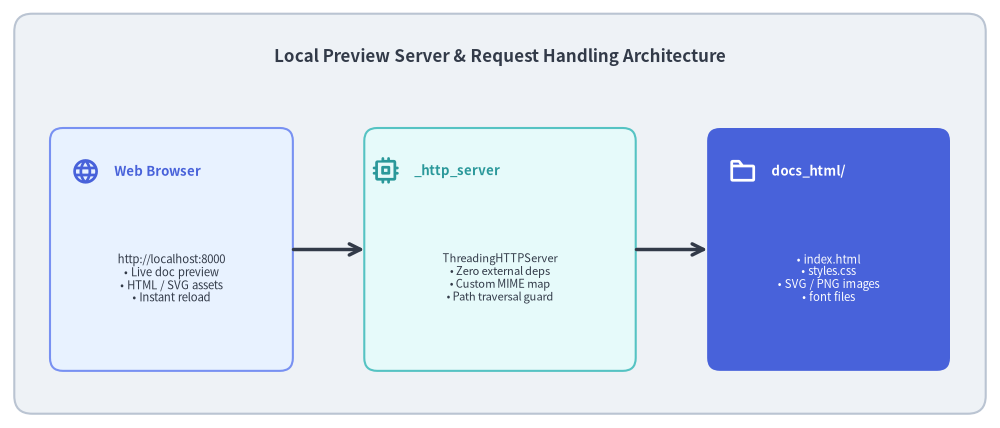
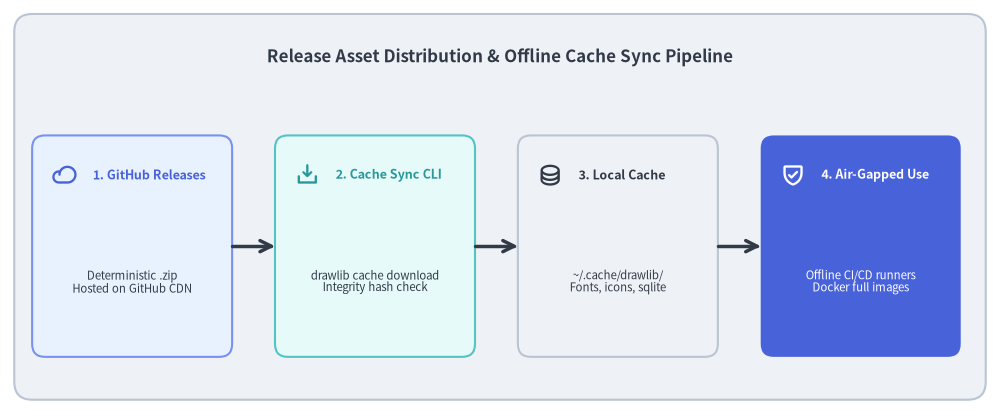

Local Preview Server & Cache Management Tooling
Developing documentation requires rapid feedback. If testing a layout change requires deploying to a remote server or installing complex web servers (like Nginx, Node.js, or Apache), the developer loop slows down significantly.
Drawlib includes a lightweight, built-in HTTP server (_http_server/) and asset distribution toolset (drawlib cache) to provide instant zero-dependency local previewing and air-gapped asset management.

Source Code
from drawlib.canvas import save, setup
from drawlib.icons import phosphor
from drawlib.lines import line
from drawlib.shapes import rectangle
from drawlib.styles import Styles
from drawlib.text import text
setup(width=140, height=60)
rectangle((70, 30), width=136, height=56, style=Styles.Neutral.patch(shape_r=2.5))
text(
(70, 52),
"Local Preview Server & Request Handling Architecture",
style=Styles.DarkBold.patch(text_size=12.2),
)
# Left: Browser Client
rectangle((24, 25), width=34, height=34, style=Styles.PrimaryNeutral.patch(shape_r=1.8))
phosphor.globe((12, 36), width=4.0, style=Styles.PrimaryBold)
text((16, 36), "Web Browser", style=Styles.PrimaryBold.patch(halign="left", text_size=9.5))
text(
(24, 21),
"http://localhost:8000\n• Live doc preview\n• HTML / SVG assets\n• Instant reload",
style=Styles.Dark.patch(text_size=8.2),
)
# Center: Python HTTP Server Engine
rectangle((70, 25), width=38, height=34, style=Styles.SecondaryNeutral.patch(shape_r=1.8))
phosphor.cpu((54, 36), width=4.0, style=Styles.SecondaryBold)
text((58, 36), "_http_server", style=Styles.SecondaryBold.patch(halign="left", text_size=9.5))
text(
(70, 21),
"ThreadingHTTPServer\n• Zero external deps\n• Custom MIME map\n• Path traversal guard",
style=Styles.Dark.patch(text_size=8.0),
)
line((41, 25), (51, 25), arrow_head="->", style=Styles.DarkBold)
line((89, 25), (99, 25), arrow_head="->", style=Styles.DarkBold)
# Right: Static File Tree
rectangle((116, 25), width=34, height=34, style=Styles.PrimaryFlat.patch(shape_r=1.8))
phosphor.folder((104, 36), width=4.0, style=Styles.WhiteBold)
text((108, 36), "docs_html/", style=Styles.WhiteBold.patch(halign="left", text_size=9.5))
text(
(116, 21),
"• index.html\n• styles.css\n• SVG / PNG images\n• font files",
style=Styles.White.patch(text_size=8.2),
)
save()
1. Concept: Zero-Dependency Developer Experience
Drawlib's preview server requires no Node.js runtime, npm packages, or external web servers:
- Built strictly using Python's standard library
http.server.ThreadingHTTPServer. - Serves generated HTML documentation, CSS stylesheets, Javascript modules, vector SVGs, and raster PNGs concurrently.
- Automatically allocates the next available port if default port
8000is occupied.
2. Positioning: HTTP Server Subsystems & Security
The preview server implements several specialized architectural capabilities:
_CustomHTTPServer& macOS DNS Stall Bypass: Standard Pythonhttp.server.HTTPServercan suffer from 5-second connection delays on macOS when resolvinglocalhost._CustomHTTPServeroverridesserver_bind()onsocketserver.TCPServer, enforcing explicit IPv4 loopback binding (127.0.0.1) and disabling blocking reverse-DNS lookups._CustomHTTPRequestHandler& Cache-Busting: To ensure that documentation edits and re-rendered images display immediately upon page refresh, the handler injects aggressive cache-control headers:
It also logs referer telemetry onCache-Control: no-store, no-cache, must-revalidate, max-age=0 Pragma: no-cache Expires: 0404 Not Foundresponses to rapidly diagnose broken assets.- Preflight Link Scanner Mode (
--check): When launched with--check, the server runs headlessly without binding a port:- Uses
_LinkExtractor(HTMLParser)to extract all<a href>and<img src>tags. - Forbidden Path Scanner: Scans for accidental leaks of local filesystem paths, immediately flagging URIs starting with
/usr/,/home/,/private/,/tmp/, Windows drive letters (^[A-Za-z]:[\\/]), orfile://. - Exits with
0(clean) or1(broken/forbidden links found).
- Uses

Source Code
from drawlib.canvas import save, setup
from drawlib.icons import phosphor
from drawlib.lines import line
from drawlib.shapes import rectangle
from drawlib.styles import Styles
from drawlib.text import text
setup(width=140, height=58)
rectangle((70, 29), width=136, height=54, style=Styles.Neutral.patch(shape_r=2.5))
text(
(70, 50),
"Release Asset Distribution & Offline Cache Sync Pipeline",
style=Styles.DarkBold.patch(text_size=12.2),
)
steps = [
(18.5, "1. GitHub Releases", "Deterministic .zip\nHosted on GitHub CDN", phosphor.cloud, Styles.PrimaryNeutral, Styles.PrimaryBold),
(52.5, "2. Cache Sync CLI", "drawlib cache download\nIntegrity hash check", phosphor.download_simple, Styles.SecondaryNeutral, Styles.SecondaryBold),
(86.5, "3. Local Cache", "~/.cache/drawlib/\nFonts, icons, sqlite", phosphor.database, Styles.Neutral, Styles.DarkBold),
(120.5, "4. Air-Gapped Use", "Offline CI/CD runners\nDocker full images", phosphor.shield_check, Styles.PrimaryFlat, Styles.WhiteBold),
]
for x, title, desc, icon_func, card_style, icon_style in steps:
rectangle((x, 23.5), width=28, height=31, style=card_style.patch(shape_r=1.8))
icon_func((x - 9.5, 33.5), width=3.4, style=icon_style)
text((x - 5.5, 33.5), title, style=icon_style.patch(halign="left", text_size=9.0))
sub_style = Styles.White if card_style == Styles.PrimaryFlat else Styles.Dark
text((x, 18.5), desc, style=sub_style.patch(text_size=8.2))
for i in range(3):
x_from = steps[i][0] + 14.0
x_to = steps[i + 1][0] - 14.0
line((x_from, 23.5), (x_to, 23.5), arrow_head="->", style=Styles.DarkBold)
save()
3. Details: Release Asset Distribution & Offline CI/CD
To keep the drawlib wheel package lightweight (< 5MB on PyPI), heavy binary font packages and icon catalogs are hosted externally on GitHub Releases:
3.1. Deterministic .zip Archives & Manifest Verification
External asset packages are distributed as byte-reproducible .zip archives generated via create_deterministic_zip_bytes():
- File timestamps are pegged to a fixed epoch (
2026-01-01 00:00:00). - Permissions are normalized to
0o644(files) and0o755(directories). AssetManifestcryptographically records the SHA-256 hash and package size, ensuring tamper-proof downloads.
3.2. Air-Gapped & Docker Container Readiness
For enterprise environments without internet access or strict offline CI/CD requirements:
# Pre-download all assets into user cache
uv run drawlib cache download --all
# Build full offline Docker container
./dcli docker build --full
Because all fonts and icons are pre-warmed inside ~/.cache/drawlib/, documentation builds and tests run 100% offline with zero external network requests.
Next, explore how development workflows and toolsets are automated in Developer Tooling: dcli Orchestrator.